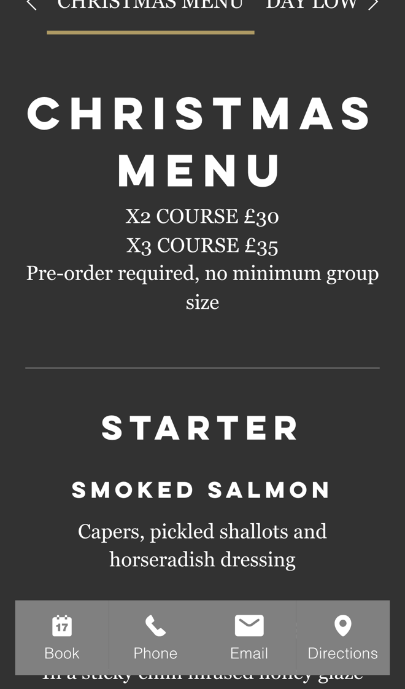

Zinc Abersoch: Christmas and group bookings, sorted online
I went through your website on a phone, the way someone planning a Christmas meal or a night out in Abersoch would, and read your homepage, menus and booking terms. Evening tables already book online, with your deposit and house rules set out clearly. Where I think you'd save the most time is the bookings that still go by email: Christmas pre-orders and larger parties.
What's already working
Three things I'd change
Take Christmas pre-orders online
Your Christmas menu is "X2 COURSE £30" or "X3 COURSE £35", with "Pre-order required, no minimum group size". Nothing on the site takes the pre-order, and your booking notes say "For larger parties and all other enquiries, e-mail us".

Every Christmas table means collecting starters, mains and puddings by email or phone, then writing them up for the kitchen, in your busiest month of the year.
- When a Christmas table is booked, the organiser gets a link to a pre-order page with your Christmas menu.
- Each guest picks their starter, main and pudding, and the £3 lamb supplement is added by itself.
- You get one list per table for the kitchen, and tables that haven't ordered get a reminder.
Let larger parties book without emailing
Your booking notes say "For larger parties and all other enquiries, e-mail us at enquiries@zincabersoch.com, please include your phone number in the message." They also ask people who book several tables to "e-mail or call us following the booking to confirm."
Each group means emails back and forth before anything is held. A group that is still waiting for a reply may book somewhere else.
- A short group form asks for the date, the sitting, adults and children, high chairs, prams and allergies.
- It checks your rules as they go, like children 13 and under in the first sitting, and shows the £10 a head deposit.
- You get the request with everything you need, approve it with one tap, and the deposit link goes out by itself.
Text back the calls you miss
Your number, 01758 713433, is on every page. Breakfast and lunch are "first come, first served", and the evening restaurant is booked online.
During a busy service the phone can ring out. Someone ringing to ask about a table tonight may simply try the next place.
- A missed call gets a text back within a minute: sorry we missed you, we're busy serving.
- The text has your Book Now link, today's opening times and how to reach you about larger parties.
- At the end of the day you see every missed caller in one list, so you can ring back the ones who need it.
Your website, answering for you
An assistant that answers the questions you get asked again and again, at any hour. These answers come only from your own website: your opening times, your booking notes and your dog policy.
Anything it can't answer, it passes to you with the customer's details.
What happens next
For five local businesses I'm setting up one of these for free, in return for an honest review. Pick whichever would help most.
I'm Tom Williams and I run Tomoni-AI. If a 20-minute chat would help, reply to my email or give me a ring.
Call 07971 512158Email Tom